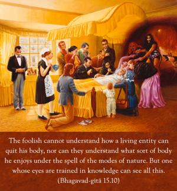
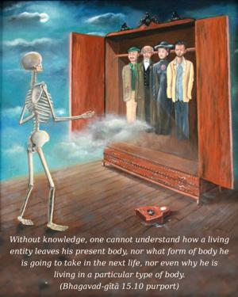
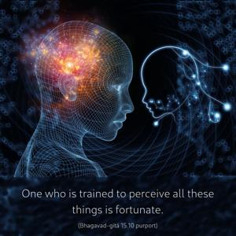
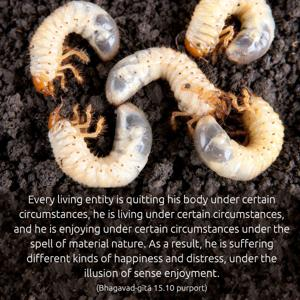

The foolish cannot understand how a living entity can quit his body, nor can they understand what sort of body he enjoys under the spell of the modes of nature. But one whose eyes are trained in knowledge can see all this.




The word jñāna-cakṣuṣaḥ is very significant. Without knowledge, one cannot understand how a living entity leaves his present body, nor what form of body he is going to take in the next life, nor even why he is living in a particular type of body. This requires a great amount of knowledge understood from Bhagavad-gītā and similar literatures heard from a bona fide spiritual master. One who is trained to perceive all these things is fortunate. Every living entity is quitting his body under certain circumstances, he is living under certain circumstances, and he is enjoying under certain circumstances under the spell of material nature. As a result, he is suffering different kinds of happiness and distress, under the illusion of sense enjoyment. Persons who are everlastingly fooled by lust and desire lose all power to understand their change of body and their stay in a particular body. They cannot comprehend it. Those who have developed spiritual knowledge, however, can see that the spirit is different from the body and is changing its body and enjoying in different ways. A person in such knowledge can understand how the conditioned living entity is suffering in this material existence. Therefore those who are highly developed in Kṛṣṇa consciousness try their best to give this knowledge to the people in general, for their conditional life is very much troublesome. They should come out of it and be Kṛṣṇa conscious and liberate themselves to transfer to the spiritual world.